west-game-ii-9eae55-20261122-0950 · playable /home/user/simula-playable-simula-agent/games/samples/west-game-ii.html · 2026-11-22 10:32 UTC| cut | video | score | gate | H | J | judge |
|---|---|---|---|---|---|---|
| a hook-first |
79.4 | ✓ | 83.7 dead air 14% · action 0.385 · hook 0.908 moments 0.811 · arc 0.85 · 8 shots ✓ core loop · ✓ feature · ✓ progression |
75.9 loop 8 · features 7.5 human 7.5 · action 7.5 hook 8 · polish 7 · run 7.5 |
This highlight effectively demonstrates the core loop of auto-shooting outlaws, collecting gold, and stepping on pads to upgrade defenses. The opening whiskey glass slam is a strong hook, and the escalating enemy waves keep the action engaging throughout. worst @2s: Abruptly cuts from the exciting whiskey glass hook to a basic 'DRAG TO MOVE' tutorial prompt. | |
| b ★ learn-then-escalate |
83.4 | ✓ | 85.7 dead air 2% · action 0.395 · hook 0.664 moments 0.876 · arc 0.85 · 6 shots ✓ core loop · ✓ feature · ✓ progression |
81.5 loop 9 · features 8.5 human 8 · action 8 hook 7 · polish 8 · run 8 |
This 20-second highlight clearly demonstrates the core loop of building a gold mine, auto-shooting waves of outlaws, and unlocking deputies. It features natural human-like movement, steady action, and strong visual progression, making it a very effective ad highlight. worst @0s: Starts with tutorial text and standing on a build pad rather than immediate combat. | |
| c feature-montage |
83.6 | ✓ | 85.8 dead air 7% · action 0.375 · hook 1.107 moments 0.788 · arc 0.693 · 8 shots ✓ core loop · ✓ feature · ✓ progression |
81.8 loop 9 · features 8.5 human 8 · action 7.5 hook 8 · polish 8 · run 8 |
This highlight clearly demonstrates the core loop of collecting gold, building town defenses, and auto-shooting waves of outlaws. The pacing is engaging with natural joystick movement and punchy unlock animations, making it a strong ad creative. worst @5s: The scripted camera pan to the cave entrance interrupts the player's movement and briefly slows the pace. | |
| base_first baseline: first 20 s |
40.6 | ✓ | 51.3 dead air 32% · action 0.315 · hook 0.793 moments 0.56 · arc 0.544 · 1 shots ✗ core loop · ✓ feature · ✗ progression |
31.9 loop 3.5 · features 3 human 5 · action 2 hook 2 · polish 5 · run 2 |
This clip only captures the slow opening tutorial of building a gold mine, completely missing the core combat and town defense mechanics. With zero outlaws, no shooting, and minimal movement, it lacks the action and hook needed for an effective ad highlight. worst @0s: The first 8 seconds are spent slowly wiggling the joystick in an empty tutorial area with no enemies or action. | |
| base_random baseline: random clips |
64.9 | ✓ | 73.9 dead air 20% · action 0.364 · hook 0.663 moments 0.647 · arc 0.7 · 5 shots ✓ core loop · ✓ feature · ✓ progression |
57.6 loop 7 · features 7 human 7 · action 6 hook 3 · polish 4.5 · run 4.5 |
The highlight shows off key features like deputies, gold collection, and fence upgrades, making the core loop easy to understand. However, opening with a static tutorial screen and using jarring cuts where the gold count jumps around hurts the pacing and polish. worst @0s: Opens on a static 3-second tutorial prompt instead of immediate gameplay action. |
The first-time experience is hampered by persistent visual ambiguity, with the player frequently unsure whether to fight outlaws, collect gold, or step onto competing build pads. Additionally, unskippable camera pans lock out controls mid-session, and the playable runs for 93 seconds without ever presenting an end card.
| time | type | severity | issue | suggested fix | evidence | signals |
|---|---|---|---|---|---|---|
| 0:18.5–1:28.5 | unclear_goal | high | Competing objectives and unclear pad priorities From t=18.5s onward, clarity scores stay between 22% and 49%. At t=18.5s, a tutorial hand points to a gold pile down-left while a 300-gold pad sits right next to the cowboy (with 0 gold). Later, during active waves at the left fence (t=37.2s-77.5s), hint hands repeatedly point to the minecart or hay bale on the right while multiple pads (200, 300, 1,050) compete for attention. | Dim or hide non-affordable build pads, and show only one contextual objective arrow at a time (e.g., point to gold only when below the next pad's cost, or point to the fence when outlaws are attacking). | 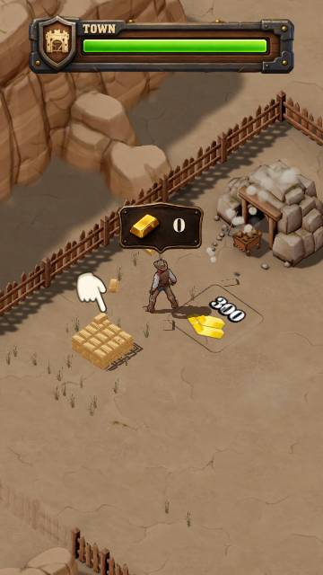 | S2, S3, S7, S8, S9, S10, S11, S12, S13, S14, S15, S18, S19, S20, S21, S22, S23 |
| 0:24.5–0:30.5 | stuck | high | Camera pan cutscene locks out input without context At t=24.5s, the camera pans to a cave entrance with all UI hidden, causing the player's previous input to have no effect and dropping clarity to 15%-19% until control returns at t=30.5s. A similar camera pan occurs during building construction at t=63.9s-66.9s while enemies attack the fence. | Keep the Town HP bar and a subtle 'INCOMING WAVE' banner visible during the cave pan, shorten the cutscene to under 2 seconds, and avoid panning the camera away from active combat during construction animations. | 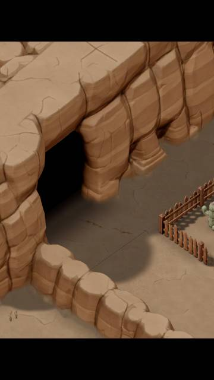 | S4, S5, S6, S16, S17, S25 |
| 0:00.5–0:08.0 | pacing | medium | Slow onboarding and stalled initial pad interaction The session starts with 3.0s of no motion or input and takes 5.0s for an input to visibly work. By t=8.0s, the cowboy is standing on the 270-gold spot with the tutorial hand still on the joystick, and waiting produces no visible change (0.1% pixel change). | Trigger an immediate, brief pulse on the joystick and gold pad at t=0.5s, and auto-collect or clearly animate the gold transfer as soon as the cowboy steps onto the starting 270-gold pad. | 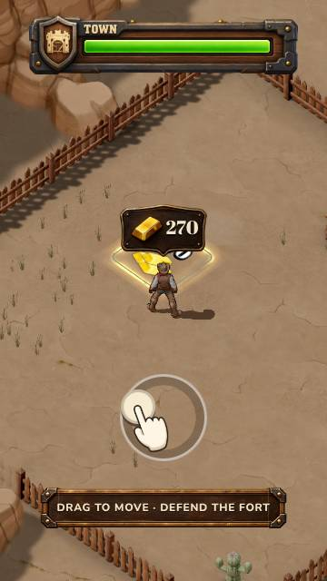 | S1, S24, S26 |
| 1:32.6 | pacing | medium | No end card shown within 93 seconds The playable ran until the 92.6s time limit without ever displaying an end card or install CTA. | Trigger the end card and install CTA after the first major wave is cleared or the saloon/deputies building finishes around t=65s, rather than letting the session time out. | S27 |
| time | saw | phase | planner | actions (with human reaction time) | notes | cost |
|---|---|---|---|---|---|---|
| 0:02.0 turn 1 | 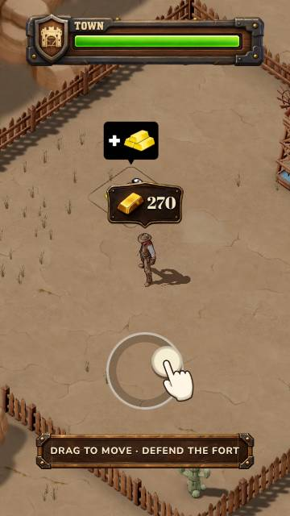 |
tutorial decider: tutorial 89% clarity 90% |
sees: Town defense game with cowboy, gold build spot, and virtual joystick tutorial progress: First turn, starting tutorial |
0:03.6 drag Move cowboy up-left toward the gold spot (+1643 ms) | Goal: defend the fort/town. Controls: virtual joystick at bottom (around [730, 500]). There is a +gold spot just above the cowboy. | 22.2s $0.0058 |
| 0:05.5 turn 2 | gameplay decider: tutorial 76% clarity 83% last input worked: 91% |
sees: Cowboy standing on glowing gold spot showing 270 gold progress: Moved onto the gold spot, 270 gold popup appeared |
0:05.5 wait Wait on the gold spot to collect/trigger it | Goal: defend the fort/town. Controls: virtual joystick at bottom (around [730, 500]). Standing on the gold spot shows 270 gold. Waiting to see if it collects or builds. | 2.4s $0.0048 | |
| 0:08.0 turn 3 | 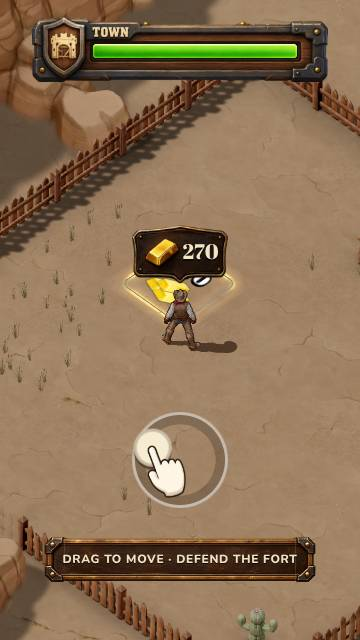 |
tutorial decider: tutorial 83% clarity 73% last input worked: 11% |
sees: Cowboy standing on gold spot (270), tutorial hand still on joystick progress: No change after waiting |
0:08.3 drag Move cowboy up-left using the joystick (+305 ms) | Goal: defend the fort/town. Controls: virtual joystick at [730, 500]. Standing on 270 gold spot did nothing, maybe we need to collect gold elsewhere or move further up-left. | 3.2s $0.0060 |
| 0:10.1 turn 4 | 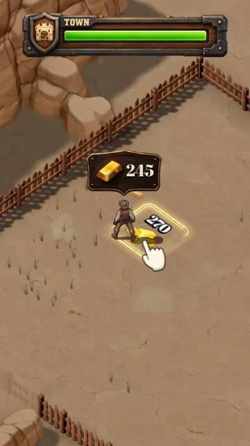 |
gameplay decider: tutorial 60% clarity 68% last input worked: 49% |
sees: Cowboy with 245 gold standing near 270 gold build pad, gold bar just above him progress: Moved onto the 270 pad, have 245 gold (need 25 more). |
0:11.3 drag Move up-right to collect gold bar and explore (+1162 ms) | Goal: defend town, collect gold to build on pads. Controls: virtual joystick. Have 245 gold, pad costs 270. Need more gold. | 3.6s $0.0065 |
| 0:12.8 turn 5 | 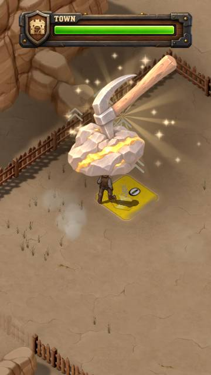 |
gameplay decider: gameplay 45% clarity 59% last input worked: 70% |
sees: Cowboy on yellow pad with giant pickaxe and gold rock icon progress: Reached the gold mine pad and triggered it |
0:12.8 wait Wait for gold mine to finish building or mining | Goal: defend town, collect gold to build on pads. Controls: virtual joystick. Currently at a gold mine pad, waiting for it to build/mine. | 2.9s $0.0048 |
| 0:15.8 turn 6 | 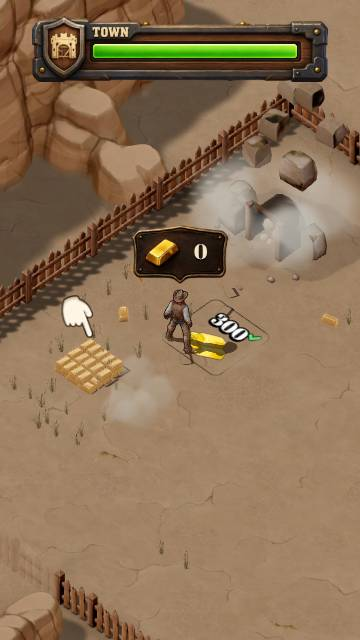 |
tutorial decider: tutorial 54% clarity 60% last input worked: 56% |
sees: Gold mine built, tutorial hand points to a large pile of gold bars to the left of the cowboy progress: Gold mine finished building and produced gold |
0:17.0 drag Move cowboy left toward the gold pile (+1221 ms) | Goal: defend town, collect gold to build on pads. Controls: virtual joystick. Gold mine built, now need to collect the pile of gold bars to the left. | 2.6s $0.0054 |
| 0:18.5 turn 7 | tutorial decider: tutorial 48% clarity 41% last input worked: 32% |
sees: Cowboy in the middle, tutorial hand pointing at a pile of gold bars down-left, 300 gold pad to the right. progress: Moved closer to the gold pile, now need to move down-left onto it. |
0:19.9 drag Move cowboy down-left onto the pile of gold bars (+1338 ms) | Goal: defend town, collect gold to build on pads. Controls: virtual joystick. Gold mine built, now collecting the pile of gold bars down-left. | 3.0s $0.0054 | |
| 0:21.5 turn 8 | 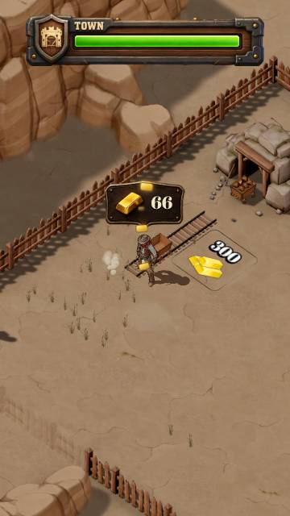 |
gameplay decider: gameplay 75% clarity 46% last input worked: 93% |
sees: Cowboy has 66 gold, standing by the gold mine and a 300-gold pad. progress: Collected gold up to 66. |
0:22.2 drag Move cowboy down-left to explore the town and look for more gold or pads (+627 ms) | Goal: defend town, collect gold to build on pads. Controls: virtual joystick. Gold mine built, collecting gold (66). Next pad costs 300. | 3.2s $0.0055 |
| 0:24.5 turn 9 | gameplay decider: gameplay 74% clarity 15% last input worked: 15% |
sees: Camera panned to a cave entrance in the rock wall, no UI visible progress: Camera seems to be panning or in a brief cutscene |
0:24.5 wait Wait for camera pan/cutscene to finish | Goal: defend town, collect gold to build on pads. Controls: virtual joystick. Gold mine built, collecting gold (66). Next pad costs 300. Currently camera panned to cave. | 2.3s $0.0048 | |
| 0:27.0 turn 10 | 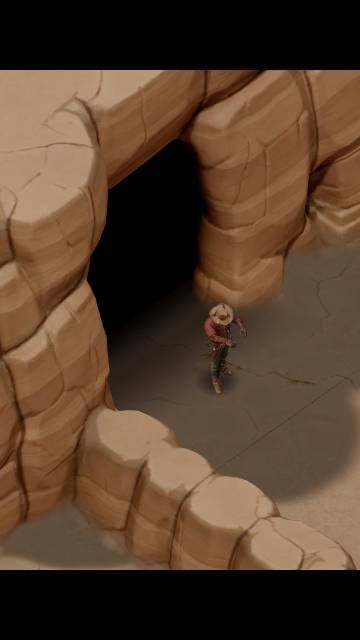 |
gameplay decider: gameplay 94% clarity 18% last input worked: 53% |
sees: Cutscene showing a zombie emerging from the cave progress: Cutscene progressed, enemy appeared from cave |
0:27.0 wait Wait for cutscene to finish and camera to return to player | Goal: defend town, collect gold to build on pads. Controls: virtual joystick. Gold mine built, collecting gold (66). Next pad costs 300. Cutscene showing enemy emerging from cave. | 2.3s $0.0046 |
| 0:30.5 turn 11 | 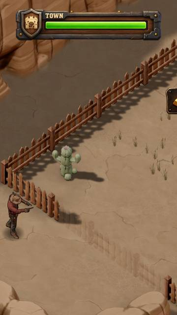 |
gameplay decider: gameplay 91% clarity 19% last input worked: 95% |
sees: Cowboy at bottom-left near fence opening, Town HP bar at top progress: Cutscene ended, camera back on cowboy |
0:31.5 drag Move cowboy up-right through the fence opening into town (+1031 ms) | Goal: defend town, collect gold to build on pads. Controls: virtual joystick. Gold mine built. Cutscene ended, cowboy is at bottom-left outside fence. Need to move up-right into town. | 2.8s $0.0051 |
| 0:33.5 turn 12 | 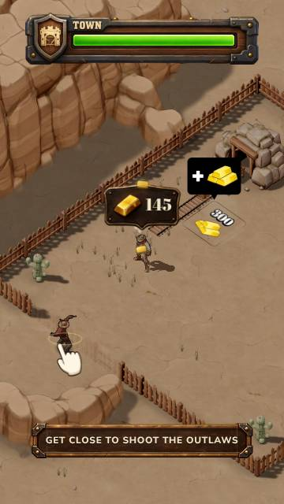 |
tutorial decider: tutorial 88% clarity 83% last input worked: 37% |
sees: Cowboy in town, outlaw at bottom-left with tutorial hand and 'GET CLOSE TO SHOOT THE OUTLAWS' banner progress: Cowboy moved into town; outlaw appeared |
0:34.9 drag Move cowboy down-left toward the outlaw to shoot him (+1428 ms) | Goal: defend town, collect gold to build on pads. Controls: virtual joystick. Gold mine built (145 gold, next upgrade 300). Outlaw appeared at bottom-left; need to get close to shoot. | 2.9s $0.0058 |
| 0:37.2 turn 13 | 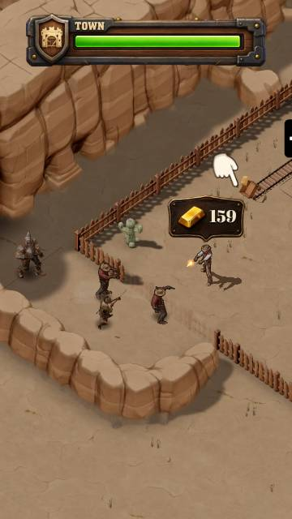 |
gameplay decider: gameplay 66% clarity 29% last input worked: 39% |
sees: cowboy shooting outlaws near the fence; 159 gold; white hand pointing near minecart progress: moved into range and cowboy is auto-shooting the outlaws |
0:37.2 wait Let cowboy shoot the nearby outlaws | Goal: defend town, collect gold to build on pads. Controls: virtual joystick. Cowboy auto-shoots when near enemies. 159 gold. Hand pointing at minecart. | 3.8s $0.0058 |
| 0:38.9 turn 14 | 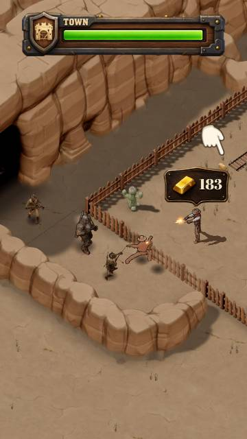 |
gameplay decider: gameplay 65% clarity 37% last input worked: 92% |
sees: Cowboy shooting outlaws, 183 gold, hand pointing at minecart/tracks on the right progress: Cowboy killed an outlaw, gold increased to 183 |
0:40.3 drag Move cowboy up-right toward the minecart/tracks where the hand is pointing (+1337 ms) | Goal: defend town, collect gold to build on pads. Controls: virtual joystick. Cowboy auto-shoots when near enemies. 183 gold. Hand pointing at minecart/tracks on the right. | 3.3s $0.0056 |
| 0:42.6 turn 15 | 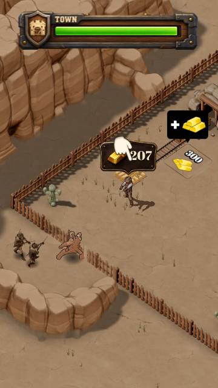 |
gameplay decider: gameplay 58% clarity 48% last input worked: 90% |
sees: Cowboy near gold mine pad (300 cost), 207 gold, enemies entering bottom-left progress: Reached 207 gold, moved near mine pad |
0:43.7 drag Move cowboy down-left toward enemies to shoot them and get gold (+1092 ms) | Goal: defend town, collect gold to build on pads. Controls: virtual joystick. Cowboy auto-shoots when near enemies. 207 gold, need 300 for gold mine pad. Enemies entering bottom-left. | 3.1s $0.0059 |
| 0:46.3 turn 16 | 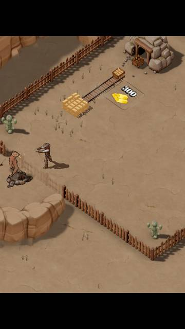 |
gameplay decider: gameplay 71% clarity 38% last input worked: 49% |
sees: Cowboy shooting an outlaw near the left fence, 300 gold mine pad visible top-right progress: Moved cowboy to enemies, he is actively shooting one |
0:46.3 wait Let cowboy finish shooting the outlaw | Goal: defend town, collect gold to build on pads. Controls: virtual joystick. Cowboy auto-shoots when near enemies. Need 300 for gold mine pad. | 2.7s $0.0052 |
| 0:48.8 turn 17 | 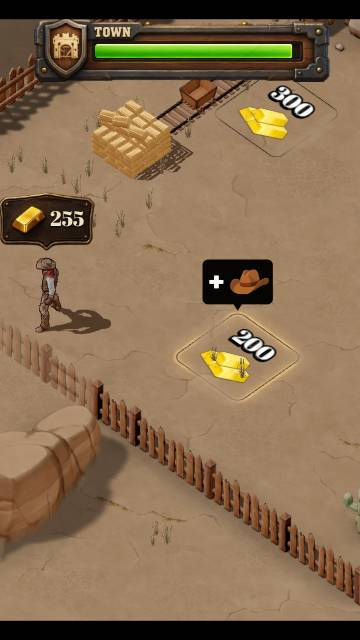 |
gameplay decider: gameplay 48% clarity 43% last input worked: 57% |
sees: Cowboy has 255 gold, glowing 200 pad (+ cowboy hat) nearby progress: Got 255 gold, 200 pad is glowing |
0:49.8 drag Move cowboy right-down onto the 200 pad (+1040 ms) | Goal: defend town, collect gold to build on pads. Controls: virtual joystick. Have 255 gold, going to step on the 200 pad (+ hat) to hire an ally. | 4.6s $0.0059 |
| 0:52.4 turn 18 | 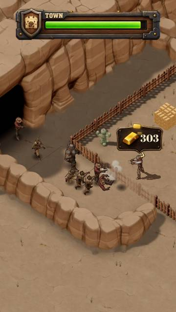 |
gameplay decider: gameplay 82% clarity 36% last input worked: 53% |
sees: Cowboy has 303 gold, shooting outlaws near the fence as a wave approaches from the left. progress: Gold increased to 303. |
0:53.6 drag Move cowboy right toward the pads to spend gold (+1151 ms) | Goal: defend town, collect gold to build on pads. Controls: virtual joystick. Have 303 gold. Moving right toward the town/pads to spend gold and kite the wave. | 4.8s $0.0053 |
| 0:55.5 turn 19 | 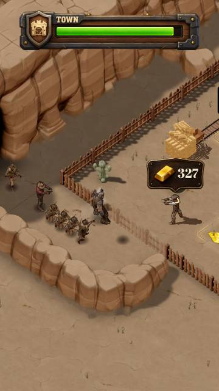 |
gameplay decider: gameplay 84% clarity 22% last input worked: 63% |
sees: Cowboy has 327 gold; enemies attacking fence on the left; glowing yellow pad visible on bottom-right. progress: Moved right, gold increased to 327, glowing pad visible at bottom-right. |
0:56.8 drag Move cowboy down-right onto the glowing yellow pad (+1228 ms) | Goal: defend town, collect gold to build on pads. Controls: virtual joystick. Have 327 gold. Moving down-right onto the glowing pad to build. | 5.0s $0.0055 |
| 0:58.8 turn 20 | 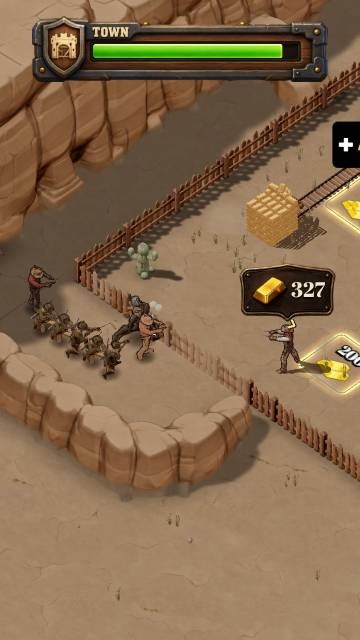 |
gameplay decider: gameplay 79% clarity 22% last input worked: 51% |
sees: Cowboy standing just left of the 200 gold pad; enemies attacking fence on the left; 327 gold progress: Cowboy moved close to the 200 pad |
1:00.1 drag Step right onto the 200 gold pad to build (+1378 ms) | Goal: defend town, collect gold to build on pads. Controls: virtual joystick. Have 327 gold, standing right next to 200 pad. Stepping onto it now. | 3.7s $0.0055 |
| 1:01.9 turn 21 | 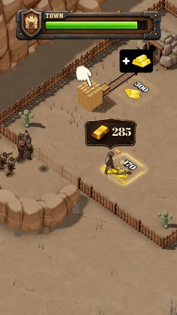 |
gameplay decider: gameplay 47% clarity 42% last input worked: 54% |
sees: Cowboy standing on pad, gold counting down from 200 to 170, 285 gold left progress: Pad is being built, gold is transferring |
1:01.9 wait Wait for the pad to finish building | Goal: defend town, collect gold to build on pads. Controls: virtual joystick. Currently building the 200 pad (170 left, 285 gold). After this, check the 300 pad or enemies. | 4.8s $0.0054 |
| 1:03.9 turn 22 | 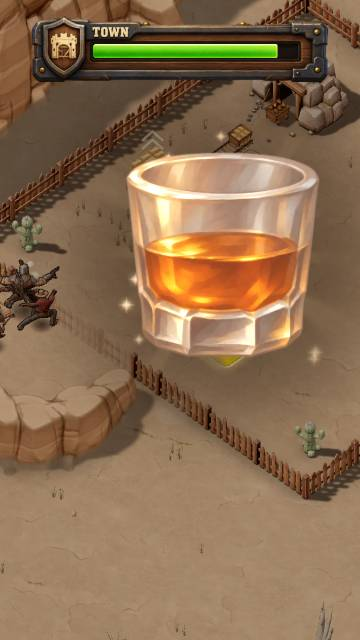 |
gameplay decider: reward 73% clarity 26% last input worked: 36% |
sees: A giant glowing whiskey glass is animating over the built pad, while enemies fight on the left. progress: The 200 gold pad finished building and triggered a saloon/whiskey animation. |
1:03.9 wait Let the building animation finish | Goal: defend town, collect gold to build on pads. Controls: virtual joystick. 200 pad finished building (whiskey glass animation). Next: see what was built and defend town. | 3.7s $0.0049 |
| 1:06.9 turn 23 | 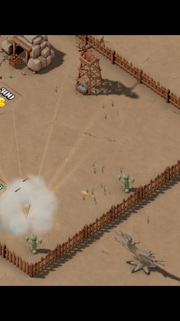 |
gameplay decider: gameplay 82% clarity 18% last input worked: 64% |
sees: Smoke puffing from new building, camera panned right progress: Building construction animation playing |
1:06.9 wait Wait for construction animation and camera pan to finish | Goal: defend town, collect gold to build on pads. Controls: virtual joystick. 200 pad building animation playing. Next: wait for animation to finish and return to gameplay. | 5.3s $0.0048 |
| 1:09.9 turn 24 | 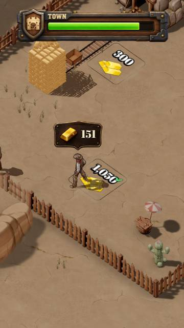 |
gameplay decider: gameplay 55% clarity 44% last input worked: 75% |
sees: Cowboy standing near 1,050 pad with 151 gold; 300 pad above progress: Construction finished and camera returned to cowboy |
1:11.3 drag Move cowboy left toward the town/enemies to collect gold (+1364 ms) | Goal: defend town, collect gold to build on pads. Controls: virtual joystick. Have 151 gold. Next: move left to fight enemies and collect more gold. | 4.5s $0.0057 |
| 1:13.7 turn 25 | 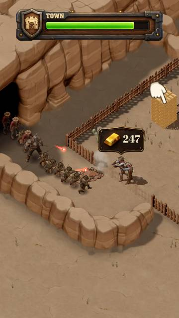 |
gameplay decider: gameplay 57% clarity 39% last input worked: 78% |
sees: Cowboy fighting enemies, 247 gold, hand pointing at hay bale top-right progress: Moved left, fought enemies, gold increased to 247 |
1:15.4 drag Move cowboy up-right toward the hay bale pad (+1690 ms) | Goal: defend town, collect gold to build on pads. Controls: virtual joystick. Have 247 gold. Hand pointing at hay bale/pad top-right. Next: move up-right to the pad. | 3.6s $0.0054 |
| 1:17.5 turn 26 | 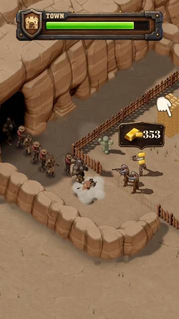 |
gameplay decider: gameplay 64% clarity 30% last input worked: 50% |
sees: Gameplay: cowboy has 353 gold, hand points at hay bale pad to the upper right progress: Moved closer to the hay bale pad and collected more gold (now 353) |
1:18.8 drag Move cowboy up-right onto the hay bale pad (+1298 ms) | Goal: defend town, collect gold to build on pads. Controls: virtual joystick. Have 353 gold. Hand pointing at hay bale pad top-right. Next: move up-right onto the pad. | 8.4s $0.0053 |
| 1:21.3 turn 27 | 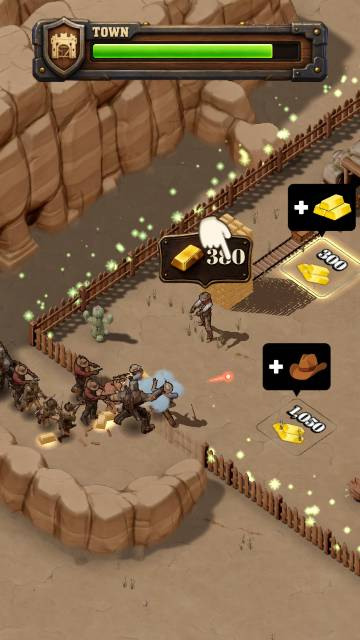 |
gameplay decider: reward 56% clarity 47% last input worked: 58% |
sees: Gameplay: cowboy has 380 gold, standing near a 300-gold pad (+ gold) on the right, enemies fighting at the gate progress: Moved up-right, now have 380 gold and near the 300 gold pad |
1:22.4 drag Move cowboy right/up-right onto the 300 gold pad (+1051 ms) | Goal: defend town, collect gold to build on pads. Controls: virtual joystick. Have 380 gold. 300 gold pad (+ gold) is just to our right. Next: move right/up-right onto the 300 pad. | 11.0s $0.0060 |
| 1:25.2 turn 28 | 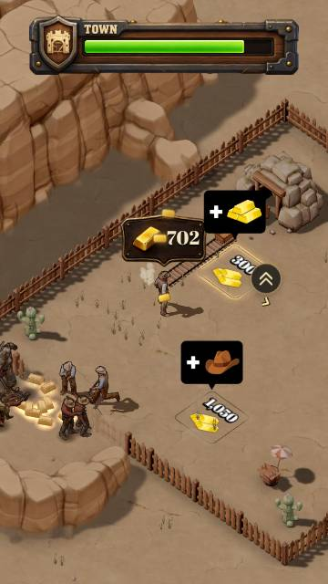 |
gameplay decider: gameplay 64% clarity 49% last input worked: 85% |
sees: gameplay, cowboy near 300 gold pad with 702 gold progress: Collected more gold (702) and moved close to the 300 gold pad |
1:26.5 drag Move cowboy right onto the 300 gold pad (+1368 ms) | Goal: defend town, collect gold to build on pads. Controls: virtual joystick. Have 702 gold. 300 gold pad (+ gold) is just to our right. Next: move right onto the 300 pad. | 14.6s $0.0054 |
| 1:28.5 turn 29 | 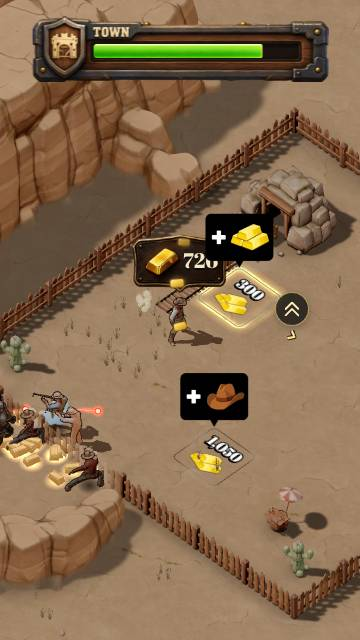 |
gameplay decider: gameplay 76% clarity 46% last input worked: 80% |
sees: Cowboy standing next to the 300 gold pad (+ gold), 720 gold progress: Moved closer to the 300 gold pad |
1:30.0 drag Move cowboy right onto the 300 gold pad (+1582 ms) | Goal: defend town, collect gold to build on pads. Controls: virtual joystick. Have 720 gold. 300 gold pad (+ gold) is right next to us. Next: step onto the 300 pad. | 14.0s $0.0052 |
Files: raw.mp4 · highlight.mp4 · candidates/ · moments.json · game_model.json · edl_*.json · eval.json · friction.json/.md · plans.jsonl · actions.jsonl · observations.jsonl · decisions in plans.jsonl · ledger.jsonl · trace.jsonl · obs/